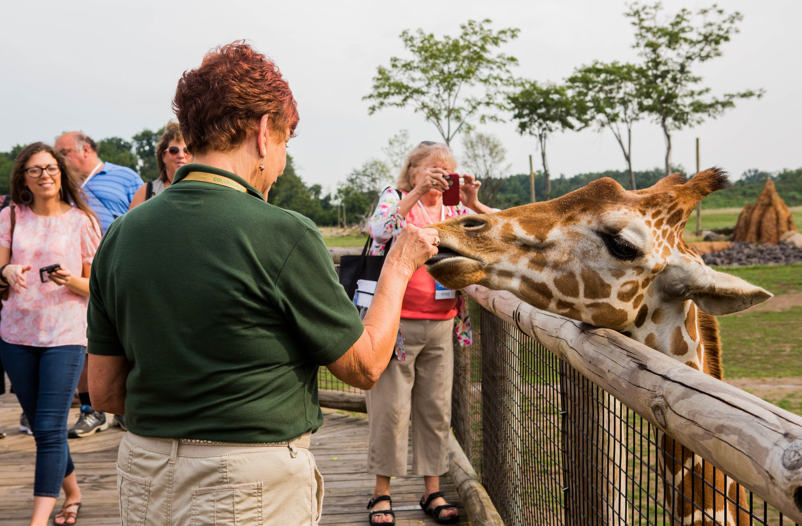
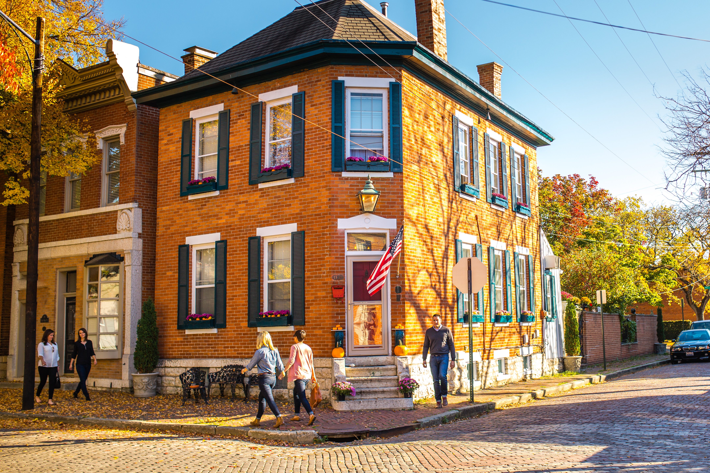

Places to Visit in Columbus
Explore some of the most popular and beautiful attractions around Columbus, Ohio.

Columbus Zoo and Aquarium
Experience adventure, wildlife, adn unforgettable family fun at the Columbus Zoo and Aquarium -- one of the nation's most celebrated zoos. Home to thousands of animals fro around the world, the zoo offers visitors an exciting opportunity to explore diverse habitats, learn about wildlife conservation, and create lasting memories. The zoo is also known for its commitment to animal care, education and conservation programs that help protect endangered species worldwide. Whether you are visting with family, friends, or on a school trip, there's something for eveyone to enjoy.
Visit
Franklin Park Conservatory
Step into a world of natural beaity, vibrant gardens, and breathtaking art at the Franklin Park Conservatory and Botanical Gardens. Located just a few minutes from downtown Columbus, this stunning destination offers visitors a relaxing and inspiring experience filled with exotic plants, seasonal displays, and interactive exhibits for all ages. The conservatory feautures indoor and outdoor gardens showcasing plant life from around the world. From lush tropical rainforests and colorful orchids to desert landscapes and towering palm trees, every area offers something unique to discover. Visitors can ejoy peaceful walking paths, stunning floral dispplays, and unforgettable scenry throughout every season.
Visit
Short North Art District
Experience the energy, creativity, and culture of the Short North Arts District -- one of Columbus' most vibrants and exciting neighborhoods. Known for its lively atmosphere, unique local businesses, art galleries, restaurants, nightlife and entertainment/ This is a must-visit destination for both visitors and locals alike. This district combines art, food, and shopping into one unforgettable experience. Visitors enjoy the neighborhood;s welcoming atmosphere, creative spirit, and endless opportunities to explore something new. Day or night, the district is full of excitment, makiing it one of the most popular destinations in the city.
Visit
COSI Science Museum
Discover hands-on learning, exciting exhibits, and unforgettable adventures at COSI -- one of the top science centers in the country. Located along the downtwon Columbus riverfront, it inspires curiosity nd creativity through interactive experiences desginated for visitors of all ages. One of the museum's most popular attractions is its planetarium, where visitors can enjoy the journey through space and explor the wonders of the universe. Visitors enjoy the perfect combination of education and enterntainment. The center creates an exciting environment where guests can explorem, technology, space, or creativity, COSI offers something inspiring for everyone.
Visit
Scioto Mile
Enjoy stunning riverfront views, scenic walking paths, and vibrant city life at the Scioto Mile -- one of downtown Columbus' most beautiful outdoor destinations. Stretching along the Scioto River, this urban park system combines nature recreation, and entertainment into a relaxing experience for visitors of all ages. This places features miles of connected parks, trails, fountains and green spaces that create the perfect setting. Visitors can take in breathtaking views of the downtown skyline while exploring the riverfront's beaitifully landscaped areas and public displays. Throughout the year the Scioto Mile also hosts concerts, festivals, fitness events, and community celebrations that bring energy and excitment to the heart of the city.
Visit
German Village
Step back in time and experience the historic beauty of the German Village -- one of Columbus' most beloved neighborhoods. Known for its brick-lined streets, beautifully restored homes, local shops, and rich history, German Village offers visitors a unique blend of old-world charm and modern city life. Originally settled by German immigrants in the 1800s, the neighborhood has preserved its historic character while becoming a vibrant destination filled with restaurant, cafes, boutiques. and cultural attractions. Walking throgh this part of Columbus feels like exploring a small European town right in the heart of the city. Every street is filled with character, making it a favorite destination for sighseeing, photography, and relaxing strolls.
Visit
Easton Town Center
Experience premier shopping, dinnig, and entertainment at the Easton Town Center -- one of the Midwest's most popular lifestyle destinations. Combining the charm of an outdoor town square with excitment of a modern shopping center, Easton offers visitors an unforgettable experience for all ages. Easton Town Center is the perfect place to spend the day exploring. Visitors can shop everything from luxury brands and fashion boutiques to popular national retailers and specialty shops. The beautifully designed streets, fountains, and gathering spaces create a lively atmosphere that makes every visit enjoyable. The center also features movie theaters, comedy, seasonal events, and family attractions that keep the destination active year-round.
Visit
Ohio Stadium
It is also known "The Horseshoe", Ohio Stadium is home to the Ohio State Buckeyes football team and one of the most iconic college stadiums in the country. Game days bring energy and excitement to the entire city.
Visit